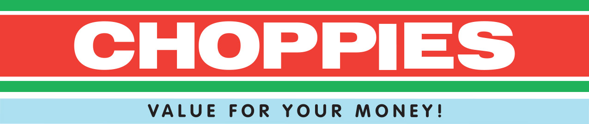
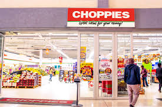
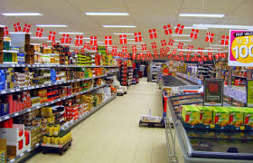
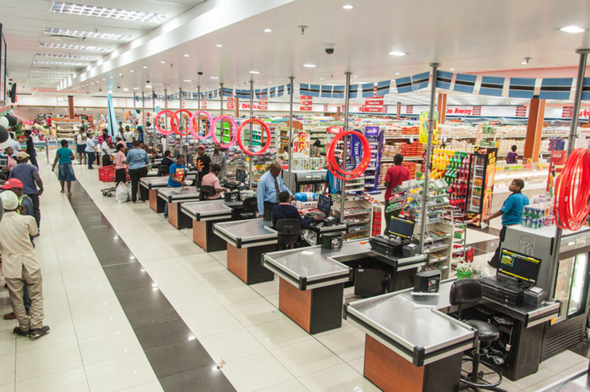

Choppies was founded in 1986 with one supermarket named Wayside Supermarket (Proprietary) Limited in Lobatse by the Chopdat family, with a second store opening in 1993. Since 1999, when the company only had two stores, the management team, which included the founding members of Choppies Mr Farouk Ismail (Current Deputy Chairman) and Mr Ramachandaran Ottapathu (Current CEO) (who are both also the major shareholders with each holding 34.2% of the shares), the company executed aggressive growth, consolidating the group into one structure in 2003 (previously franchising under different names) to become the dominant leader in the fast-moving consumer good industry in Botswana.
  